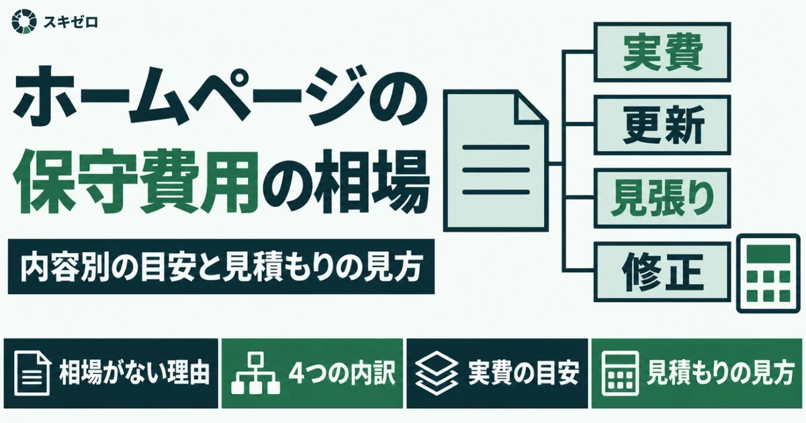
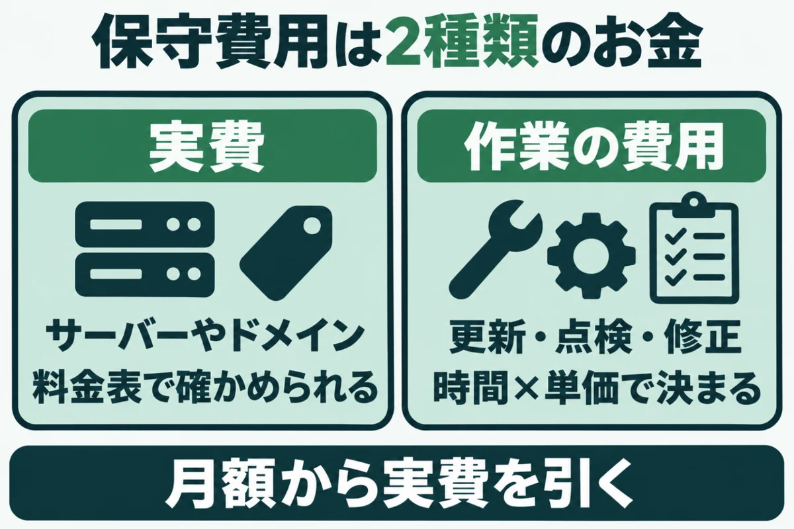
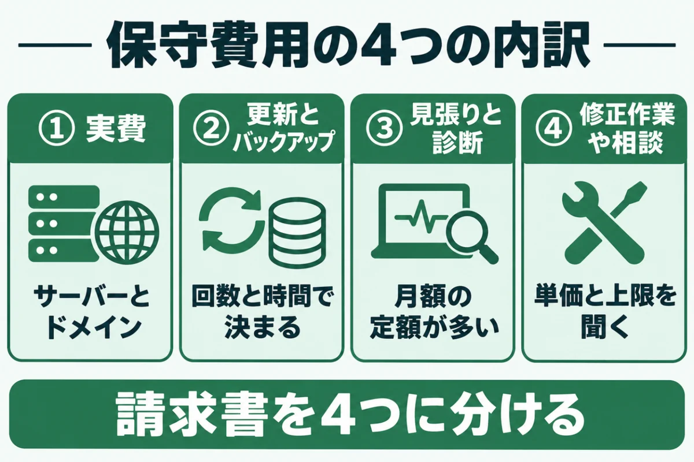
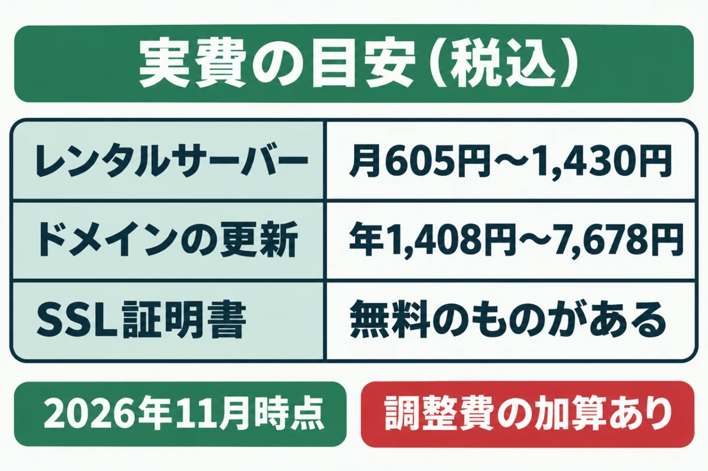
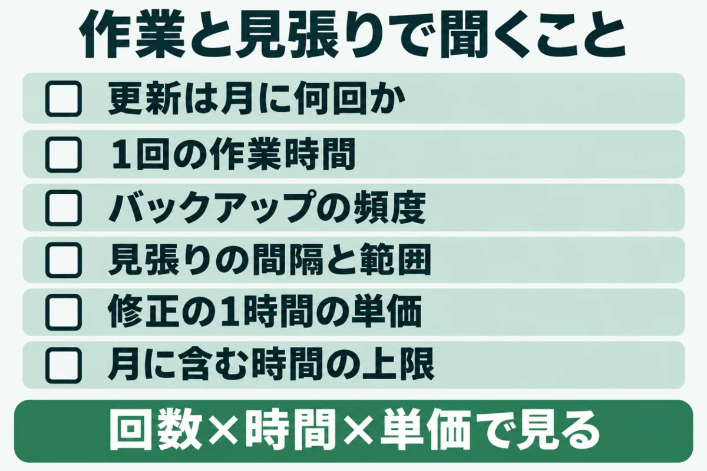
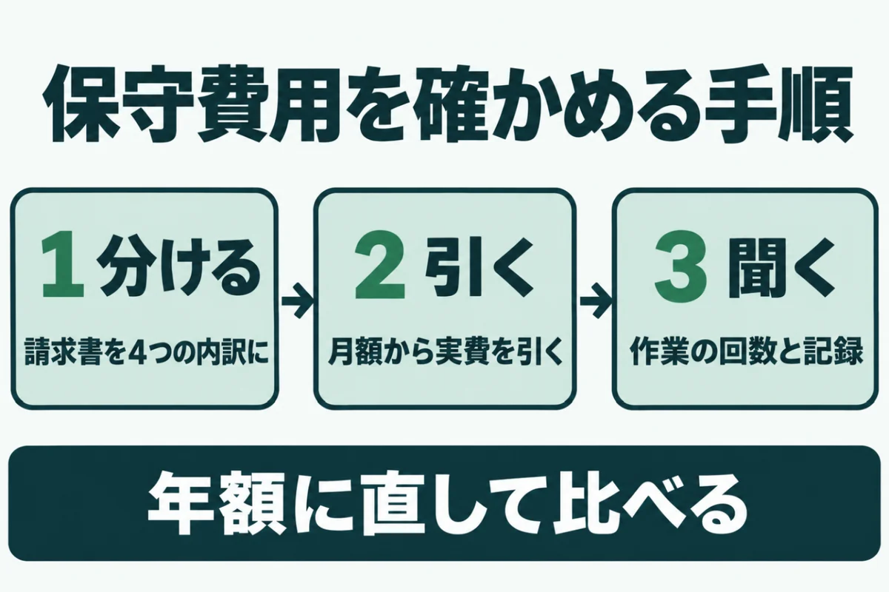

ホームページの保守費用の相場は月いくら？内容別の目安と見積もりの見方

「制作会社に毎月払っている保守費用は、高いのか安いのか」と気になっていませんか？
ホームページの保守費用は、何が含まれるかで金額が大きく変わります。請求書に「保守一式」としか書かれていないと、比べる物差しがありません。
この記事では、保守費用を4つの内訳に分けて目安を整理しました。サーバーやドメインの実費、更新とバックアップ、見張りと診断、修正作業や相談の4つです。
金額は、サーバー会社などの公式の料金表と、公的な基準で確かめたものだけを載せました。確かめた時点は2026年11月です。毎月の請求書を手元に置いて読み進めてください。
ホームページの保守費用に決まった相場がない理由

ホームページの保守費用には、どの会社にも当てはまる定価がありません。同じ「月額の保守」でも、中身が会社ごとに違うからです。
金額だけを並べた相場は、含まれる作業が違うと比べようがないでしょう。先に、費用がどんな部品でできているかを押さえます。部品に分ければ、確かめられる金額と、聞いて確かめる金額が見えてくるのです。
保守費用は「実費」と「作業の費用」に分かれる
保守費用は、大きく2種類のお金でできています。1つは、サーバーやドメインのように、外の会社へ支払う実費です。もう1つは、制作会社の人が手を動かす作業の費用になります。実費は、公式の料金表でだれでも確かめられる金額です。一方で作業の費用は、かかる時間と単価の掛け算で決まります。請求書の金額からまず実費を引くと、作業にいくら払っているかが分かるでしょう。この引き算が、高いか安いかを考えるときの出発点になります。
同じ月額でも、含まれる作業の量が違う
作業の費用は、何を何回やるかで変わります。本体の更新だけを年に数回行う契約と、毎月の点検と報告まで行う契約では、手間がまるで違うのです。IPAの手引きも、利用するサービスの事業者の作業範囲を把握するよう勧めています。金額の前に、作業の範囲と回数を確かめることが先でしょう。契約書で確かめたい項目は、別の記事にまとめました。制作会社に任せたホームページ、保守契約で確認したいこと｜5つの項目と見直しの手順を見てください。
ホームページの保守費用の相場を知るための4つの内訳

ホームページの保守費用は、中身で分けると4つになります。内訳ごとに、金額の決まり方がまったく違うのが特徴です。
全体を先に表でまとめました。金額の根拠と出典は、このあとの章で1つずつ示します。自社の請求書の項目が、4つのどれに当たるかを考えながら読んでください。当てはまらない項目があれば、何の費用かを制作会社に聞く材料になるでしょう。
| 内訳 | 主な中身 | 金額の決まり方 | 確かめられた目安（2026年11月時点） |
|---|---|---|---|
| ① サーバーとドメインなどの実費 | レンタルサーバー、ドメイン、SSL証明書 | 各社の公式の料金表で決まる | サーバーは月605円〜1,430円（税込、2社のスタンダードなどの例）。ドメインの更新は年1,408円〜7,678円（税込、調整費の加算あり） |
| ② 更新とバックアップ | 本体・プラグイン・テーマの更新、控えの保存、表示の確認 | 作業の回数と、1回の時間、単価の掛け算 | 公的に確かめられる金額はなし。回数と時間を見積もりで聞く |
| ③ 見張りと診断 | 版の古さや証明書の期限の点検、結果の報告 | 月額の定額で示されることが多い | スキゼロの定期診断は月4,980円または月19,800円（税込）。お助け隊サービス（社内の機器の見守り）は月額1万円（税抜き）以内 |
| ④ 修正作業や相談 | 文章や画像の差し替え、不具合の調査、相談への対応 | 作業の時間と単価の掛け算、または月の定額 | 公的に確かめられる金額はなし。単価と月の上限を聞く |
① サーバーとドメインなどの実費
1つ目は、ホームページを置く場所と住所にかかる実費です。レンタルサーバーの利用料、ドメインの更新料、SSL証明書の費用がここに入ります。どれも、サーバー会社やドメインの会社が料金表を公開しているものです。実費は、保守費用の中でいちばん確かめやすい部分でしょう。制作会社がまとめて契約し、保守費用に含めて請求する形もあります。その場合は、契約の名義がどちらにあるかも一緒に確かめてください。名義が制作会社のままだと、あとで動かしにくくなるからです。
② 更新とバックアップ
2つ目は、サイトを古くしないための定期の作業です。WordPressの本体、プラグイン、テーマの更新と、その前後の控えの保存が中心になります。更新のあとに表示が崩れていないかを見る確認も、この作業の一部です。費用は、作業の回数と1回の時間で決まります。プラグインの数が多いサイトほど、確かめる範囲が広がるでしょう。回数が契約書に書かれていない場合は、月に何回の作業なのかを聞いてください。更新の前に控えを取っているかも、あわせて確かめます。
③ 見張りと診断
3つ目は、異常や弱点に早く気づくための費用です。版の古さや証明書の期限を定期的に点検し、結果を報告する作業が当たります。改ざんの検知や、外の会社による診断もこの仲間です。見つけるだけで、直す作業は別の費用になる形もあるでしょう。IPAの手引きは、公開後も定期的な検査や診断を続けることが重要だとしています。保守費用に含まれているとは限らないので、請求書に項目があるかを見てください。含まれていなければ、別に頼むかどうかを考える材料になるでしょう。
④ 修正作業や相談
4つ目は、必要になったときだけ発生する作業の費用です。文章や画像の差し替え、不具合の調査、使い方の相談への対応などが入ります。毎月の量が読めないため、決め方は会社によって分かれるのです。月の定額に含む形と、その都度の見積もりの形があります。定額に含む場合は、月に何時間まで、何回までという上限を確かめましょう。上限を超えた分の単価も、先に聞いておくと請求で驚かずに済みます。見積もりを頼むだけで費用がかかるかどうかも、聞いておきたい点です。
ホームページの保守費用のうち実費の相場（サーバーとドメイン）

ホームページの保守費用のうち、実費は公式の料金表で確かめられます。例に挙げるのは、エックスサーバー、ロリポップ、お名前.comの3社です。スタンダードなどのプランなら、サーバーとドメインで月2,000円台の前半までに収まります。
金額はすべて2026年11月時点のもので、税込です。上位のプランや有料のオプションを使っていれば、その分だけ上がるでしょう。自社がどの会社のどのプランを使っているかは、制作会社に聞けば分かります。
レンタルサーバーは月605円〜1,430円の例がある
エックスサーバーのスタンダードは、36か月契約で月990円、12か月契約で月1,100円です。3か月契約では月1,320円になります。ロリポップのスタンダードは、36か月契約で月605円、1か月契約で月1,265円でした。同じくハイスピードは、月660円から1,430円です。契約の期間が長いほど、月あたりの金額は下がります。初期費用は、どちらも0円でした。エックスサーバーのビジネスは、月3,960円から5,280円と高めです。
ドメインの更新料金は年1,408円〜7,678円の例がある
お名前.comの更新料金の表では、.comが1年で1,408円、.jpが3,124円です。会社向けの.co.jpは、1年で7,678円でした。月にならすと、およそ117円から640円になります。注意したいのは、この料金に一定の割合の調整費が加算される点です。2026年10月1日からの料率は、25.50%とされています。ドメインは、種類と会社で更新料金が変わると覚えておきましょう。ドメインの更新忘れで起きること｜期限切れのあとの流れと期限の確認方法も見てください。
SSL証明書とバックアップは、無料で付くことがある
SSL証明書は、サーバーの料金に含まれていることがあります。エックスサーバーの無料独自SSLは、0円で数の制限なく使える仕組みです。自動バックアップも、エックスサーバーでは全プランに標準で付いています。運営者の自社サイトのサーバーでは、Webが7日分、データベースが14日分でした。無料の機能と同じものを、別に請求されていないかを見てください。ロリポップのスタンダードには、自動バックアップが付きません。7世代バックアップという月440円の有料オプションを足す形です。
ホームページの保守費用のうち作業と見張りの相場の考え方

ホームページの保守費用のうち、作業の部分には公的な相場の数字が見当たりません。中小企業庁やIPAの調査を探しましたが、保守の月額を調べたものは確かめられませんでした。
作業の費用は、時間と単価の掛け算で考えます。回数と時間が分かれば、金額が見合っているかを自分で判断できるでしょう。見張りと診断は、料金を公開しているサービスと公的な基準が物差しになります。
更新とバックアップは、回数と時間を聞く
更新の作業は、年に何度も発生します。WordPress.orgの公開記録では、7.1が2026年8月19日に出ました。その後、11月18日までの3か月で修正版が5回出ています。小さな修正と安全上の更新は、自動で入る仕組みです。バックアップは、公式の説明では小さなサイトで週1回が目安とされています。何を月に何回、1回に何分かけるかを聞くと、費用の根拠が見えてくるでしょう。プラグインとテーマは、数が多いほど確かめる手間が増えます。
- 参考：Release Archive｜WordPress.org
- 参考：WordPress site maintenance｜WordPress.org Documentation
- 参考：Backups｜WordPress Developer Resources
見張りと診断は、公開された月額を物差しにする
たとえばスキゼロの定期診断は税込で、ライトが月4,980円、スタンダードが月19,800円です。公的な基準には、IPAの「サイバーセキュリティお助け隊サービス」があります。ネットワークを見張る型は、月額1万円（税抜き）以内という決まりです。ただし、社内の機器を見守るサービスで、ホームページの点検とは対象が違います。何を、どの間隔で見てくれるかを並べて比べるのがこつでしょう。ホームページのセキュリティ対策の費用相場｜無料・月額・単発の目安と抑え方も参考にしてください。
修正作業や相談は、単価と上限を聞く
修正作業や相談の費用にも、公的に確かめられる相場の数字はありません。金額は、作業にかかる時間と、1時間あたりの単価で決まります。見積もりでは、1時間の単価と、月に含まれる時間の上限を聞いてください。使わなかった時間を翌月に回せるかも大事な点です。毎月の修正がほとんどないなら、都度の見積もりに変える方法もあるでしょう。反対に修正が多い会社は、定額のほうが割安になることがあります。過去半年の依頼の回数を数えると、どちらが合うかを決めやすくなるのです。
ホームページの保守費用が相場に合うかを見積もりで確かめる手順

ホームページの保守費用が見合っているかは、3つの段階で確かめられます。分ける、引く、聞くの順に進めるのが基本です。
制作会社を疑うための作業ではありません。何に払っているかを知り、納得して続けるための確認です。聞き方を工夫すれば、関係を悪くせずに進められるでしょう。契約の更新の時期が近いなら、その前に済ませておくと話がしやすくなります。
請求書を4つの内訳に分けてもらう
最初に、毎月の請求書と契約書を集めます。「保守一式」とまとめて書かれている場合は、内訳を出してもらいましょう。頼むときは、実費、更新とバックアップ、見張りと診断、修正や相談の4つに分けてほしいと伝えます。内訳を出せない保守費用は、比べようがありません。「社内の予算の説明に使いたい」と理由を添えると、角が立ちにくいでしょう。サーバーとドメインは、会社名とプラン名まで書いてもらってください。公式の料金表と見比べるためです。
月額から実費を引いて、作業の費用を出す
内訳が分かったら、月額から実費を引きます。残った金額が、作業と見張りに払っている費用です。この金額で何が行われているかを、次の段階で確かめることになります。月額ではなく、年額に直して比べると判断しやすいでしょう。年に一度の作業や、年払いのドメインの料金も同じ土俵に乗るからです。サーバーの料金が公式の料金表より高いこともあります。その場合は、契約や支払いを代わりに行う手間の分が含まれているかを聞いてみてください。
作業の回数と記録を聞き、相談先を考える
最後に、残った費用で行われている作業を確かめます。更新とバックアップの回数、点検の間隔、修正に使った時間を、月ごとの記録で見せてもらいましょう。運営者の自社サイト15件の点検では、心当たりのない編集者のアカウントが2つ見つかりました。払っていても、見ていない部分は残るものです。記録が出ない、名義を教えてもらえない場合は、別の制作会社や専門家に相談する目安になります。先に外からの無料の診断で、今の状態を確かめておくと話が早いでしょう。
URLを入れるだけで、WordPress本体やPHPの版、プラグインなど8項目を無料で判定します。続けて見張りたい場合は、定期診断のライトが月4,980円、スタンダードが月19,800円です（どちらも税込）。
無料で診断するホームページの保守費用の相場に関するよくある質問
保守費用に含まれるサーバーの料金が、公式の料金表より高いのはなぜですか？
制作会社がサーバーを代わりに契約している場合、手間の分が上乗せされていることがあります。支払いや更新の手続き、設定の変更、障害のときの窓口などです。上乗せそのものは、おかしなことではありません。大切なのは、何の手間が含まれているかを説明してもらえるかどうかです。会社名とプラン名を聞き、公式の料金表と見比べてみましょう。差が大きいと感じたら、含まれる作業を一覧で出してもらってください。
更新や修正がない月も、同じ保守費用を払うのは普通ですか？
月額の定額は、作業がない月も同じ金額になる契約です。何かあったときにすぐ動いてもらうための備えに払っている面があります。ただし、何か月も作業の記録がないなら、見直す余地があるでしょう。過去半年の作業の記録を出してもらい、金額と見比べてください。作業が少ないと分かれば、定額を下げる相談ができます。都度の見積もりに変えてもらう方法も選べるでしょう。
保守費用を下げたいとき、どこから見直せばよいですか？
先に、同じものに二重に払っていないかを確かめましょう。サーバーには、SSL証明書や自動バックアップが無料で付くことがあります。同じ内容が、別の項目で請求されていないかを見てください。次に、使っていない修正の時間の枠がないかを確かめます。本体やプラグインの更新とバックアップは、削ると危険が増える部分です。下げるなら、実費の重なりと使っていない枠から手を付けるのが安全でしょう。
サーバーとドメインを自社で契約すれば、保守費用は安くなりますか？
実費を自社で直接払う形にすれば、上乗せの分は減らせます。名義が自社になるので、制作会社を替えるときも動きやすくなるでしょう。一方で、支払いと更新の管理は自社の仕事になります。支払いを忘れてドメインの期限が切れると、サイトもメールも止まってしまうのです。自動更新の設定と、期限を知らせる連絡先の確認を忘れないでください。更新などの作業の費用は、これまでどおりかかります。
別の会社にも保守費用の見積もりを頼むとき、何をそろえればよいですか？
今の契約書と、内訳の分かる請求書をそろえてください。サーバーの会社名とプラン、WordPressの版、プラグインの数も伝えます。頼む作業は、更新の回数や点検の間隔まで同じ条件で書きましょう。条件がそろっていないと、金額を並べても比べられません。月額だけでなく、年額と、上限を超えたときの単価も出してもらうのがおすすめです。
まとめ
ホームページの保守費用は、実費、更新とバックアップ、見張りと診断、修正や相談の4つに分けられます。実費は公式の料金表で確かめられ、例ではサーバーとドメインで月2,000円台の前半まででした。
作業の費用は、回数と時間、単価を聞いて自分で判断するのが基本です。請求書を内訳に分けてもらい、年額に直して比べましょう。
まずは、今の状態を知るところから。
URLを入れるだけで、数十秒で判定が出ます。登録はいりません。